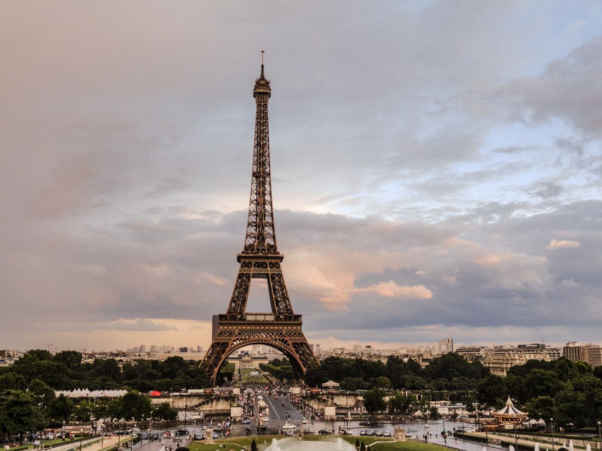

Conoce nuestros destinos
París, Francia
París, conocida como la "Ciudad de la Luz", es famosa por su arte, moda, gastronomia y cultura. Lugares iconicos como la Torre Eiffel, el Museo del Louvre y la Catedral de Notre Dame hacen de esta ciudad un destino imperdible.
Tokio, Japon

Tokio es una vibrante metropolis que combina lo tradicional y lo moderno. Desde templos antiguos como el Senso-ji hasta rascacielos futuristas, la capital japonesa ofrece experiencias únicas, deliciosa gastronomía y tecnología de punta.
Río de Janeiro, Brasil

Río de Janeiro es una ciudad llena de ritmo, color y belleza natural. Sus playas como Copacabana, el Cristo Redentor y el Pan de Azúcar son solo algunas de las maravillas que ofrece este destino tropical y alegre.
Kaikoura, Nueva Zelanda

Kaikoura es un destino único para los amantes de la naturaleza y la aventura. Famoso por su avistamiento de ballenas, delfines y focas, este pequeño pueblo costero también ofrece impresionantes paisajes montañosos y senderos escénicos a lo largo del mar.